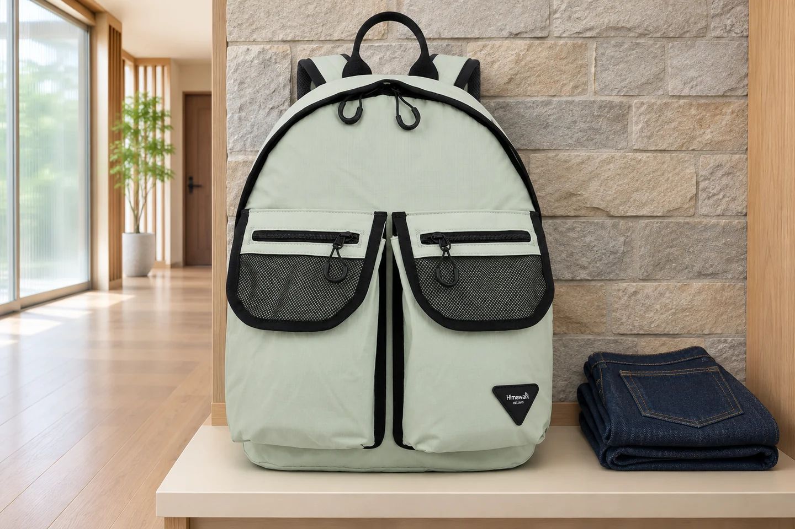
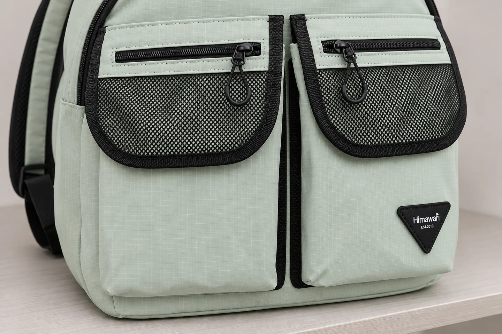
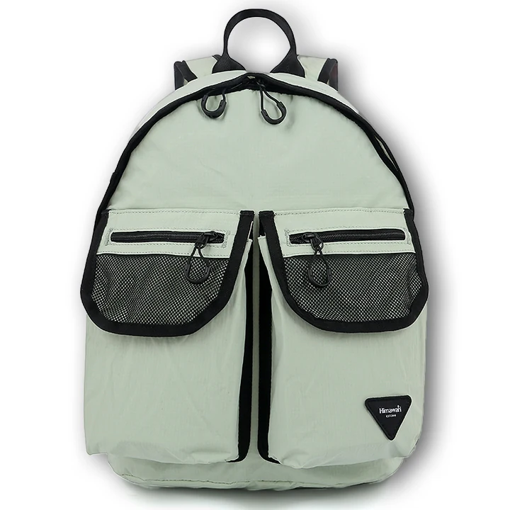

밝은 백팩에 어두운 자국이 생기면 어디부터 볼까

밝은 가방 앞에 어두운 자국이 생기면 처음에는 먼지인지 옷에서 묻은 색인지 구분하기 어렵습니다. 한쪽 포켓에만 길게 나타난 자국이라면 집에 돌아와 둔 방향이나 블랙 데님을 입고 손에 들었던 순간이 떠오를 수 있습니다. 자국을 발견한 때와 생긴 때는 다를 수 있어서 옷 색만 떠올려 원인을 정하기는 어렵습니다. No.1230 민트의 밝은 몸판과 진한 앞포켓 테두리를 보며 관찰할 자리를 정해 봅니다. 어느 면이 무엇과 닿았는지 확인하면 무작정 넓게 닦기 전에 관리 범위를 좁힐 수 있습니다.
앞면 사진에서 원래 어두운 부분을 표시합니다
실제 제품 정면을 보면 No.1230 민트의 윗부분은 둥글고 테두리는 검습니다. 앞면에는 메쉬가 들어간 포켓이 두 개 보입니다. 포켓 사이에는 진한 세로 경계가 있고 오른쪽 아래에는 검은 삼각 라벨이 붙어 있습니다. 같은 가방에서 어두운 면이 여러 위치에 있으니 새 자국을 기록할 때는 검은색이라는 말에 자리 설명을 붙입니다. ‘정면에서 볼 때 왼쪽 앞포켓의 밝은 천, 메쉬 바로 아래’라면 바로 옆의 테두리나 반대편 포켓과 섞이지 않습니다. 검은 테두리에 바짝 붙은 자국이라면 선을 넘어 밝은 몸판까지 이어지는지도 적습니다.
가방을 들어 옮기거나 포켓에 짐을 넣으면 천에 생긴 굴곡 때문에 같은 자리가 반대쪽과 다르게 보일 수 있습니다. 두 포켓을 비우고 가방을 평평한 곳에 세웁니다. 한쪽에만 물건이 남아 있으면 그쪽 포켓이 불룩해져 밝은 천끼리 바로 비교하기 어렵습니다. 같은 빛 아래 앞판 양쪽을 봤을 때 한쪽 메쉬 아래에만 흐린 자국이 남나요? 포켓이 접힌 경계만 어둡다가 보는 각도를 바꾸면 밝아질 수 있습니다. 각도를 바꿔도 같은 자리에 남는 부분은 사진 한 장을 찍어 둡니다. 가까이서 찍기 전에 두 포켓이 한 화면에 들어오도록 찍어 두면 자국과 검은 선 사이의 거리를 나중에 다시 볼 수 있습니다.

자국 높이와 닿았던 물건을 맞춰 봅니다
앞판 아래쪽이 길게 어두워졌다면 가방을 어느 면으로 놓아뒀는지 먼저 생각해 봅니다. 출근길에 들고 걸었다면 바지 옆선 근처에 닿았던 면을, 귀가 후 가방을 다른 물건 옆에 끼웠다면 보관 중 눌린 면을 살핍니다. 겉옷과 닿는 곳은 주로 등 쪽이지만 손잡이로 든 순간에는 앞포켓도 다른 방향을 향할 수 있습니다. 그래서 ‘옷을 입고 가방을 멨다’는 기억만으로 앞포켓과 옷의 접촉을 설명하기 어렵습니다. 손에 들었을 때 앞면이 몸 쪽으로 돌아왔는지 떠올리면 무엇을 대조할지 조금 더 분명해집니다.
바닥 가장자리의 짧고 둥근 흔적이라면 옷뿐 아니라 선반 모서리나 다른 가방의 테두리도 살펴볼 수 있습니다. 밝은 부분과 곧게 붙은 자국이 양쪽 포켓에 똑같이 보인다면 실제 제품 사진과 다시 비교합니다. 두 포켓의 검은 테두리는 원래 가방에 있는 선이라 사진에서 봐도 같은 위치에 있습니다. 그 선에서 떨어진 밝은 천에 남는 얼룩은 따로 사진을 가까이 찍습니다. 닿은 면을 찾았다 해도 접촉만으로 이염이 확정되지는 않습니다. 어두운 옷의 먼지, 보관 자리에 묻어 있던 오염처럼 겉으로 비슷해 보이는 원인이 여럿이기 때문입니다.
닦기 전에 가방이 허용하는 방법을 확인합니다
손질하기 전 정면 사진에서 자국을 세 부분으로 나눠 봅니다. 검은 테두리에 닿은 곳, 물건이 스쳤을 법한 높이, 그보다 멀리 떨어진 밝은 면입니다. 그중 새 흔적이 마지막 면까지 이어지는지 확인합니다. 같은 가방을 전에 찍어 둔 사진이 있다면 사진에 비친 민트색 전체보다 테두리와 자국이 만나는 지점을 먼저 비교합니다. 전 사진의 조명이 달라도 자국이 어느 선을 넘어갔는지는 찾기 쉽습니다. 의심되는 물건은 잠시 떨어뜨려 두고 다음에 같은 방향으로 사진을 찍습니다. 흔적이 그대로인지, 처음 사진에 없던 자리에 또 생겼는지에 따라 문의할 때 설명할 내용이 달라집니다.
제품 관리 안내에 확인된 방법이 있다면 그 범위에서 손질합니다. 앞포켓의 밝은 천과 메쉬, 검은 테두리가 가까이 붙어 있는 곳에는 손질할 위치를 먼저 좁혀 봅니다. 구체적인 안내가 없거나 흔적이 젖은 부분과 여러 부품에 걸쳐 있다면 위치와 발견 당시의 상태를 제품 문의에 적을 수 있습니다. ‘민트색 제품인데 앞 전체가 어두워졌다’만 적기보다 밝은 천 어디에 남은 자국인지 보여주면 상대가 살펴볼 범위가 분명합니다. 세정제나 물을 이미 썼다면 얼마나 닦았는지와 남은 흔적도 함께 전달합니다.

다음에 둘 자리를 고릅니다
가방을 잠시 다시 내려놓아야 한다면 자국이 있는 앞면이 의심되는 물건 쪽에 닿지 않도록 두 물건의 사이를 띄워 봅니다. 억지로 가방을 좁은 자리에 끼우면 포켓과 테두리가 다시 맞닿습니다. 가방을 손에 들고 옷 가까이 가져갈 때는 앞뒤 어느 쪽이 몸에 자주 닿는지도 볼 수 있습니다. 가방의 색을 바꾸거나 앞판에 보호제를 고르기 전에, 하루 중 접촉이 잦은 자리가 어디인지 알면 바로 바꿀 수 있는 배치가 생깁니다.
손질 여부가 아직 애매하면 다음에 가방을 들기 전에 같은 조건에서 한 번 더 봅니다. 다시 볼 때는 자국의 밝기와 범위를 함께 살핍니다. 포켓 선의 바깥에 계속 남는지, 같은 색 천의 반대쪽 면에도 생겼는지, 물건을 따로 둔 뒤 새 자국이 늘었는지 차례로 볼 수 있습니다. 가방의 원래 배색을 기준으로 삼고 그 바깥에 남은 위치를 좁혀 보면 다음 관리나 문의가 조금 더 구체적이 됩니다.